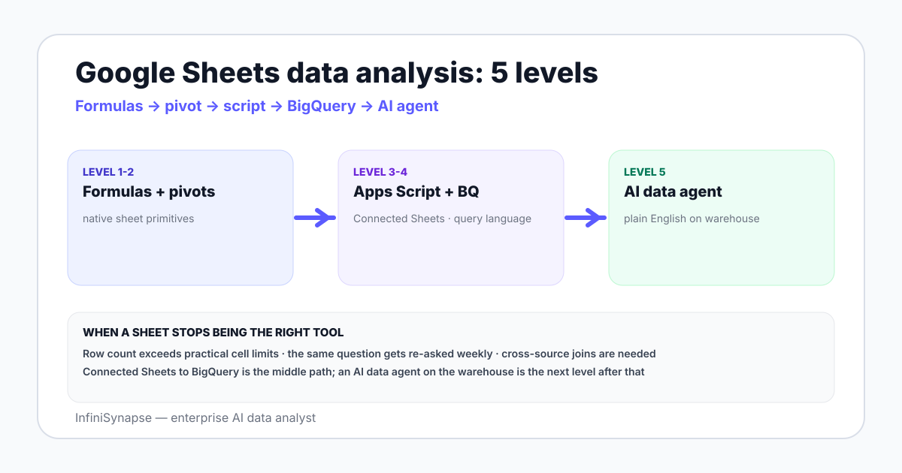

Data Analysis in Google Sheets: A 2026 Hands-On Guide for Analysts
A working analyst's tour of Google Sheets in 2026 — the formulas that pay rent, pivot tables that survive review, Apps Script automation, Connected Sheets to BigQuery, Gemini in Sheets, and an honest line for when to graduate to a data agent.
AuthorInfiniSynapse Research, analytics and platform team
Published2026-06-28 · Last verified 2026-06-28 · Next review 2026-09-28
Evidence baseGoogle Workspace documentation, Apps Script reference, Connected Sheets to BigQuery docs, Gemini in Workspace notes, BIRD benchmark, NIST AI RMF.
Disclosure: This page is published by InfiniSynapse, which builds an AI data analyst that connects to databases, files, and warehouses. The Sheets workflows below are vendor-neutral and the graduation criteria are written so you can apply them to any analytics tool — including ours.
TL;DR
Google Sheets handles real analysis up to a few hundred thousand rows when you stick to a tight set of formulas: QUERY, ARRAYFORMULA, XLOOKUP, SUMIFS, REGEXEXTRACT.
Pivot tables, named ranges, and a "raw → staging → reporting" tab pattern carry most working analyst workflows.
Apps Script automates the repeat work: triggers, custom functions, and email digests. Connected Sheets pushes the heavy joins down to BigQuery without leaving the spreadsheet.
Gemini in Sheets drafts formulas and explanations. It does not know your business — it knows your headers.
Graduate to a data agent when the workbook becomes an unmaintained ETL pipeline or when stakeholders start asking cross-source questions.
Direct answer: how do you do data analysis in Google Sheets in 2026?
Data analysis in Google Sheets in 2026 means a tight stack: a handful of formulas (QUERY, ARRAYFORMULA, XLOOKUP, SUMIFS, REGEXEXTRACT), pivot tables with disciplined column names, Apps Script for repeating work, Connected Sheets for BigQuery-scale tables, and Gemini in Sheets for formula assistance. Graduate to a data agent when the workbook starts replacing a pipeline.
A sample workbook to work from
The examples below assume one Google Sheet with three tabs. raw_orders is a CSV exported from your order system: an order_id, an order_date, a customer_id, a region, a product_sku, a units, and an amount_usd. raw_customers is an export with customer_id, signup_date, plan_tier, and utm_source. staging and report tabs are where the work happens.
This three-tab pattern — raw, staging, report — is the single highest-return habit in spreadsheet analysis. It means a reviewer can trust that the raw tab was never edited, that the staging tab shows exactly which transforms were applied, and that the report tab is what executives actually see. Many of the worst spreadsheet incidents in the wild come from analysts editing the raw export in place and then losing the original.

Formulas every analyst keeps in muscle memory
QUERY — the SQL inside Sheets
The single most useful formula in Google Sheets is QUERY. It runs a Google Visualization API query — close enough to SQL — over a range and returns the result inline. A revenue-by-region rollup looks like this:
=QUERY(raw_orders!A:G,
"SELECT D, SUM(G)
WHERE A IS NOT NULL
GROUP BY D
ORDER BY SUM(G) DESC
LABEL SUM(G) 'revenue_usd'", 1)
One formula replaces a pivot table for a known shape and recalculates whenever the raw data updates. Pair it with a date filter on B (order_date) and you have a working weekly revenue tab.
ARRAYFORMULA — apply once, fill the column
Manual drag-fill breaks the moment someone inserts a row. ARRAYFORMULA applies a formula across an entire column once. To compute amount_per_unit for every order:
=ARRAYFORMULA(IF(F2:F="", "", G2:G / F2:F))
XLOOKUP — joins without the VLOOKUP pain
XLOOKUP replaced VLOOKUP for a reason: it returns from columns to the left of the lookup key, handles exact and fuzzy matches cleanly, and accepts a default for missing rows. Bring plan_tier from raw_customers into raw_orders:
When a pivot would be overkill, the *IFS family answers single-cell questions: "revenue from EU customers on plan_tier = pro in May 2026." They scan, they group, they return a number. Keep them in your report tab, not your raw tab, so you can edit thresholds without touching the source data.
REGEXEXTRACT — parse the columns nobody designed
UTM strings, log lines, free-text customer notes — they all show up. REGEXEXTRACT(string, pattern) grabs the substring you want. To pull a campaign name out of a UTM URL:
=REGEXEXTRACT(A2, "utm_campaign=([^&]+)")
IFERROR — guard the cell, not the chart
Wrap any formula that touches user data with IFERROR(formula, fallback). A blank cell or a stray text input should never propagate #N/A into the chart that the CFO reads on Monday morning.
Pivot tables that survive review
A pivot table in Google Sheets is fast to build and slow to defend if column names are sloppy. Three habits make pivots durable:
Name your columns once. Use snake_case headers in the raw tab. Never label two columns amount. Never put units in the header (amount_usd, not amount $).
Anchor the pivot on the staging tab. Build pivots on a tab that selects from raw_* with one QUERY. When the raw data shape changes, you fix one formula, not five pivots.
Document the calculated fields. A pivot's "Calculated field" lives invisibly inside the pivot. Re-create that math as a named function or note it in a README tab so the next analyst doesn't reverse-engineer it.
For aggregations that need plain-English defense, an AI database query agent can run the same group-by against a live database and write back to a Sheet, giving you both the pivot and the SQL trail behind it.
Apps Script: automate the boring half
Apps Script is JavaScript with first-class bindings to Sheets, Gmail, Drive, and Calendar. It is the cheapest scheduler an analyst has access to. Four use cases pay for the learning curve:
Time-driven triggers. A nightly script that pulls an API endpoint with UrlFetchApp and writes rows into raw_orders. Set the trigger from the Apps Script editor under Triggers → Add Trigger.
Custom functions. Define a function called NORMALIZE_REGION and call it from a cell like a native formula. Good for opinionated text cleanup that lives in one place.
onEdit handlers. Stamp last_edited_at in column H whenever a row in the staging tab changes. Reviewers love this.
Email digests. A weekly job that reads the report tab, builds an HTML body, and sends to a Google Group. MailApp.sendEmail is two lines.
A minimal example — log the active user every time the workbook is opened:
Apps Script does have quotas — runtime per execution, daily email volume, URL fetch counts. For anything past a few thousand daily operations, move the job to a real scheduler.
Connected Sheets to BigQuery: spreadsheets at warehouse scale
Connected Sheets lets you point Google Sheets at a BigQuery table and analyze it without exporting. The data stays in BigQuery; the pivot tables, charts, and formulas push their work down as queries. You read summaries inline, billions of rows behind the scenes.
The fit case is clear: the warehouse holds the source of truth, the analyst lives in Sheets, and exporting CSVs every Monday is the bottleneck. Connected Sheets closes the loop. The catch: pivot operations against a billion-row table burn slot time. Document the queries the workbook is firing so finance does not get a surprise BigQuery bill.
If your warehouse is Snowflake or Redshift instead of BigQuery, Connected Sheets does not apply directly — Google ships it for BigQuery only. A data analyst Snowflake walkthrough covers the equivalent path through a Snowflake connector or a data agent.
Gemini in Sheets, and where it stops
Gemini in Sheets is the side panel that drafts formulas from plain English, explains formulas you didn't write, summarises a sheet, and suggests charts from a selection. For a working analyst, the three honest uses are:
Formula recall. "Write a QUERY that sums amount_usd by region for last 30 days." Faster than reading docs for the syntax of WHERE A >= today()-30.
Formula explanation. Paste a 200-character nested formula a teammate wrote and ask Gemini what it does. Saves an interrupt.
Chart suggestions. Select a range, ask for the right chart, and it picks reasonable axes.
Where it stops: Gemini reads your sheet, not your business. It does not know that region = "APAC" excludes Japan in your reporting, that plan_tier = "pro" includes legacy plans, or that May 2026's revenue was inflated by an internal test. That context lives in a knowledge base or a data dictionary, not in the headers. The same gap is why agentic analytics adds a retrieval layer — see agentic analytics explained for the structural argument.
5
Formulas that cover most working spreadsheet analysis: QUERY, ARRAYFORMULA, XLOOKUP, SUMIFS, REGEXEXTRACT.
10M
The current cell limit per Google Sheets workbook — beyond this, Connected Sheets or a warehouse becomes the only path. Source: Google
92.96%
Human engineer execution accuracy on the BIRD text-to-SQL benchmark. Models still trail this bar without context retrieval — a Gemini suggestion is a draft, not a verified result. Source: BIRD
Three Google Sheets data analysis examples
Honest, vendor-neutral examples — none invented, all common in working analytics teams.
Example
Inputs
Key formulas / features
Output
Weekly revenue summary
CSV from BI export of orders
QUERY by region and week, ARRAYFORMULA for unit conversion, sparkline chart per row
A one-tab report emailed Monday via Apps Script
UTM audit
Marketing landing-page click log
REGEXEXTRACT for campaign and source, COUNTIFS for grouping, conditional formatting for malformed tags
List of mis-tagged URLs with the campaign owner cc'd
Finance reconciliation
Bank export + invoice list
XLOOKUP by invoice id, SUMIFS for paid vs invoiced, IFERROR for missing entries
A two-column diff with mismatches at the top
A spreadsheet is fine until two analysts disagree about a number on it. Then you need a definition outside the sheet.
When to graduate to a data agent or warehouse
Sheets stops being the right tool when one of these shows up:
Five-plus tabs of import logic. Your workbook is an ETL pipeline now. Pipelines need ownership and tests.
The same number, three different places, three different answers. A signal that the metric definition lives nowhere in particular.
Row counts that trip import. Once the export does not fit, the workbook becomes a sampled view — and samples lie about totals.
Cross-source questions. "Compare last month's Stripe revenue against the Postgres order table" is a join across systems. That is a database question.
Audit requirements. Regulated industries need evidence trails per result. A formula history does not satisfy that bar. The NIST AI RMF gives a shared structure for what an evidence trail looks like.
At that point the natural move is an AI data analyst — connect the warehouse and operational databases, define metrics in a knowledge base, and let the agent answer in plain English with the SQL and source rows attached. InfiniSynapse pairs each connected database with a curated knowledge base of business definitions, which is the data agent pattern designed exactly for this graduation moment.
When Sheets is the right tool
One analyst, one workbook, agreed metrics
Data fits comfortably under a few hundred thousand rows
Collaboration matters more than raw speed
Stakeholders want a familiar surface, not a new BI tool
When Sheets is not
Production data joins across two databases
Regulated workflows with audit needs
Workbook has become a brittle ETL pipeline
Different teams calculate the same metric differently
Move past spreadsheet ETL with an AI data analyst
Connect your warehouse and operational databases read-only, seed a knowledge base with the metric definitions you currently re-derive in three tabs, and ask the same question you used to copy-paste from Sheets. Review the plan, the SQL, and the evidence trail before the answer is written back to a tab — your reviewer keeps Sheets, your business keeps the source of truth.
Yes, Google Sheets is a solid analysis surface for datasets that fit comfortably under a few hundred thousand rows, where collaboration matters more than raw speed, and where the analyst is willing to write formulas or use pivot tables. It is a poor fit when you need to join tables across multiple production databases or when row counts climb into the millions.
What are the most useful Google Sheets formulas for data analysis?
The short list every analyst uses: QUERY for SQL-style filtering and aggregation, ARRAYFORMULA for column-wide calculations, XLOOKUP for joins, SUMIFS and COUNTIFS for grouped totals, IFERROR for guarding against bad inputs, and REGEXEXTRACT for parsing strings. Pair them with named ranges and you cover most ad hoc analytics work.
How does Connected Sheets to BigQuery work?
Connected Sheets lets you query a BigQuery table directly from Google Sheets without exporting the data. You see a preview of the warehouse table, then build pivot tables, charts, and formulas that push down to BigQuery for the heavy work. It is how analysts on a Google stack work with billion-row tables from inside a familiar spreadsheet.
What can Gemini in Sheets actually do?
Gemini in Sheets adds a side panel that drafts formulas, explains existing ones, summarises a sheet, and suggests charts from a selection. It is genuinely useful for unblocking on syntax. It is not a substitute for an analyst that knows the business — the suggestions are only as good as the column names and headers you feed it.
When should I automate data analysis with Apps Script?
Reach for Apps Script when the same manual step happens more than three times a week. Typical wins: a nightly trigger that pulls an API endpoint into a tab, a custom function that wraps a vendor lookup, an onEdit handler that timestamps row changes, and a weekly digest emailed from a summary tab. It is JavaScript with native bindings to Sheets, Gmail, and Drive.
When should I graduate from Google Sheets to a data agent or warehouse?
Graduate when any of these is true: your workbook is over five tabs of import logic, the same number is calculated in three places with different results, your row count regularly trips the import limit, or stakeholders ask cross-source questions that need a join to a production database. At that point the sheet has become an unmaintained ETL pipeline.
Can I connect Google Sheets to a database for analysis?
Yes, three common paths. First, Connected Sheets to BigQuery for native warehouse access. Second, Apps Script with a JDBC connector to MySQL or PostgreSQL for direct reads. Third, a data agent that connects to the database and writes results back to a tab. The third path keeps business definitions outside the spreadsheet, which protects the dashboard from drifting formulas.
What are realistic Google Sheets data analysis examples?
Three honest examples: a weekly revenue summary that pulls a CSV from a BI export and pivots by region, a marketing UTM tag audit that uses REGEXEXTRACT to parse URLs, and a finance reconciliation that joins a bank export against an invoice list with XLOOKUP. None of these need a warehouse. All three reward clean column names and documented sources.
Methodology and review notes
Last updated: 2026-06-28 · Next scheduled review: 2026-09-28
The workflows on this page are grounded in vendor documentation (Google Workspace, Apps Script, Connected Sheets, Gemini in Workspace), public benchmarks (BIRD), governance frameworks (NIST AI RMF), and InfiniSynapse product documentation. The sample workbook is synthetic but mirrors the structure of an order plus customer dataset common in working analytics teams.
Conflict of interest: InfiniSynapse publishes this guide and sells a data agent that targets the graduation case at the end. To reduce bias, the page includes scenarios where Sheets is the right tool outright, an honest filter for when it is not, and external sources for every numeric or product claim.
Update cadence: Reviewed every 90 days for terminology, product changes, formula syntax updates, and schema consistency.